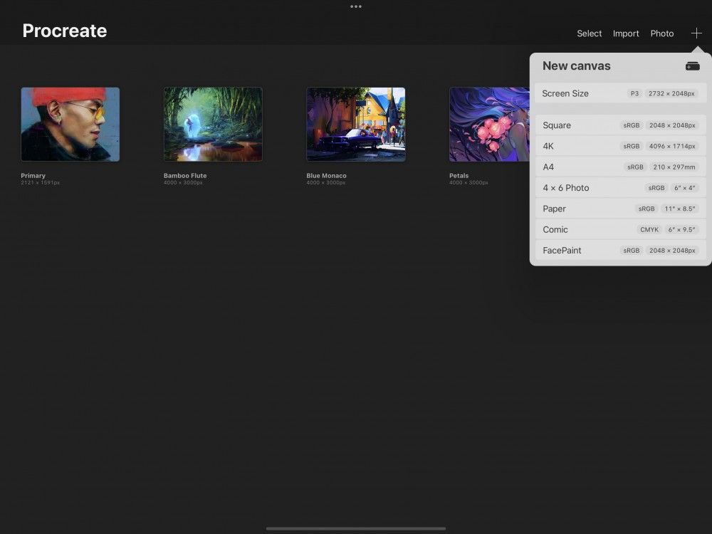
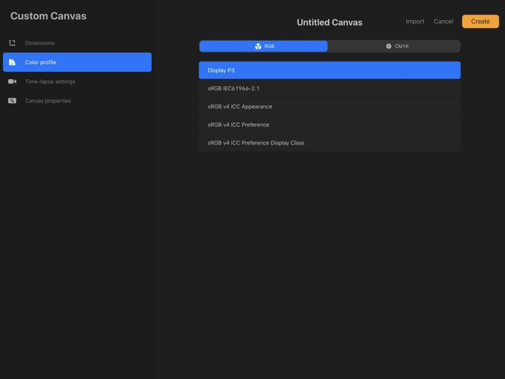
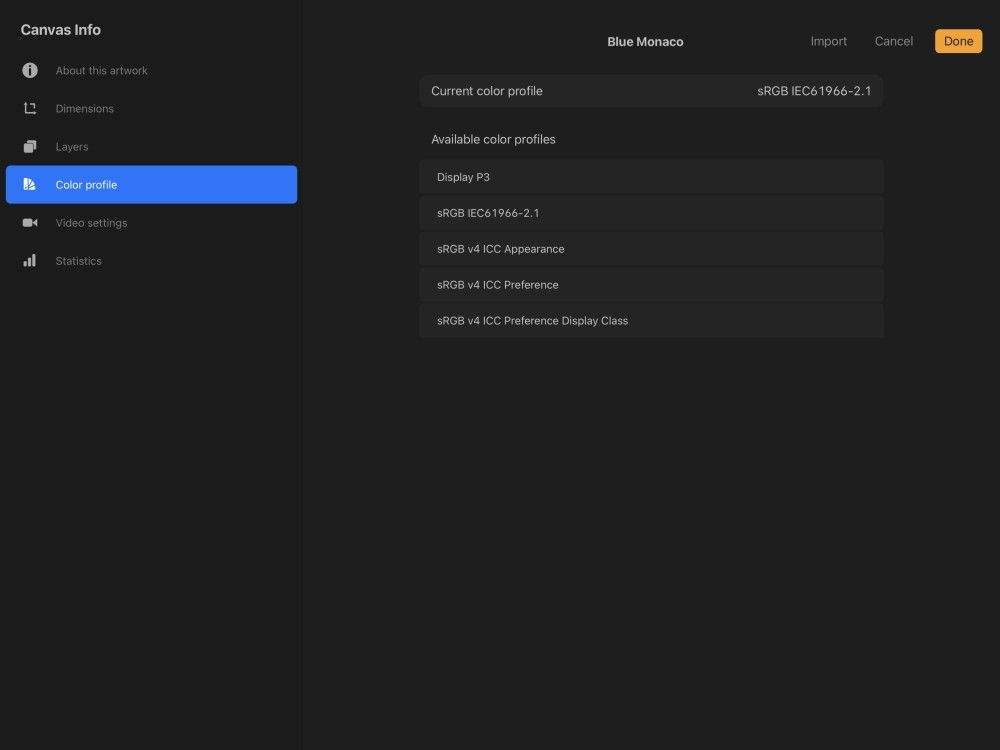

📖 Đã dịch sang tiếng Việt. Thuật ngữ chuyên môn giữ tiếng Anh — rê chuột để xem nghĩa (tooltip).
Profiles
Tạo tác phẩm với Color Profile (hồ sơ màu) được thiết kế để cho kết quả tốt nhất trên màn hình hoặc khi in.
Color Profiles (hồ sơ màu)
Màn hình và máy in khác nhau trong cách quản lý màu. Dùng các hồ sơ màu của chúng tôi, bạn có thể tạo các tác phẩm nổi bật ở cả hai định dạng.


Truy cập Color Profiles
Truy cập Color Profiles khi tạo một Custom Canvas.
Trong Procreate Gallery, chạm biểu tượng + ở trên cùng bên phải để mở menu New Canvas. Chạm biểu tượng hình chữ nhật có dấu + ở trên cùng bên phải để vào giao diện Custom Canvas.
Color Profiles được tích hợp sẵn
Procreate được tích hợp sẵn các hồ sơ màu RGB và CMYK tiêu chuẩn.

Bạn có thể chọn các hồ sơ này khi tạo một khung vẽ tùy chỉnh.
Cho tác phẩm hiển thị trên màn hình, chúng tôi cung cấp năm hồ sơ RGB. Chọn giữa Display P3 trên các thiết bị tương thích, hoặc bốn hồ sơ sRGB theo tiêu chuẩn ngành.
Procreate cũng có một số hồ sơ CMYK theo tiêu chuẩn ngành khác nhau, dựa trên các cài đặt máy in phổ biến cho tác phẩm in ấn.
Pro Tip
With a P3 canvas you can use extra-saturated greens, reds, and oranges.
RGB so với CMYK
Nghệ thuật kỹ thuật số thường được tạo để phù hợp với màn hình hoặc máy in, chứ không phải cả hai.
RGB tốt nhất cho tác phẩm tạo ra để xem trên màn hình, vì nó quản lý màu theo cùng cách màn hình hoạt động. RGB phân tích mỗi màu thành một sự kết hợp riêng biệt của đỏ, xanh lá và xanh dương.
CMYK là lựa chọn tốt nhất cho tác phẩm để in ấn. CMYK phân tích mỗi màu thành sự pha của lục lam (cyan), hồng sẫm (magenta), vàng (yellow) và đen (black). Điều này khớp với bốn màu mực mà máy in thương mại dùng.
Có được màu sắc sống động và chính xác nhất có thể bằng cách chọn không gian màu phù hợp nhất với đích đến cuối cùng của tác phẩm.
Pro Tip
Once you've set your Color Profile to be RGB or CMYK for a piece of art, there's no way to change it. If you’re not sure, leave your Color Profiles on their default settings.
Import Color Profiles (nhập hồ sơ màu)
Bạn có thể tải về các hồ sơ màu tùy chỉnh hoặc tự tạo.
Chạm Import để thêm chúng vào Procreate.

Đổi Color Profiles
Bạn có thể đổi hồ sơ màu của tác phẩm bất cứ lúc nào, miễn là nó nằm trong nhóm hồ sơ CMYK hoặc RGB đã đặt.

Để đổi hồ sơ màu, hãy chạm Actions > Canvas > Canvas information > Color profile. Từ đây chọn hồ sơ màu bạn muốn đổi sang.
Mặc dù bạn có thể đổi Color Profiles, nhưng bạn không thể chuyển đổi không gian màu từ RGB sang CMYK hoặc ngược lại.
Heads Up
Changing an artwork’s Color Profile can have a sudden dramatic effect on your Time-lapse. If you want to avoid this, change your Color Profile once your artwork is finished.
Pro Tip
Custom color profiles are a complex subject beyond the scope of this Handbook. You can learn more about color profiles in this Explainer. What is a color profile?
Still have questions?
If you didn't find what you're looking for, explore our video resources on YouTube or contact us directly. We’re always happy to help.